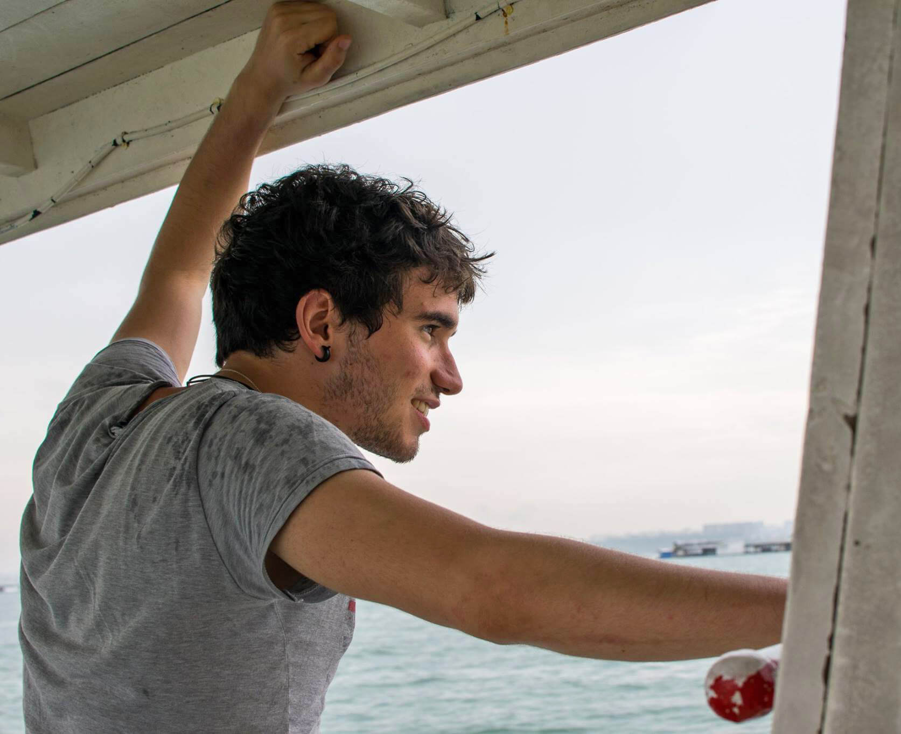

About me

I am an innovation economist with a focus on digital industrial policy. My work sits at the crossroads of industrial organisation, information science and the strategy of the firm.
At the heart of my research is a view of value creation as a collective phenomenon. In other words, growth is a team effort. Coordinating that effort is more than markets alone can accomplish: much of it runs through firms, culture, laws, standards, data and APIs. Value is thus created collectively but captured privately, and that mismatch brings the question of power to the fore. Because modern power operates through the architecture of production rather than through prices, conventional market measures cannot gauge it: it sits in a blind spot of economic analysis. My research tries to bring that blind spot into focus.
I currently work in the Digital Economy unit of the European Commission’s Joint Research Centre, analysing digital infrastructure and industrial ecosystems to support, among other things, EU economic security policy. I hold a PhD from the UCL Institute for Innovation and Public Purpose, supervised by Antonio Andreoni and Mariana Mazzucato, which included a research semester at UC Berkeley under the mentorship of David J. Teece. Before and during my PhD I worked in competition policy for several years, specialising in antitrust and coordination, mergers, State aid, intellectual property regulation, and standard-essential patents.